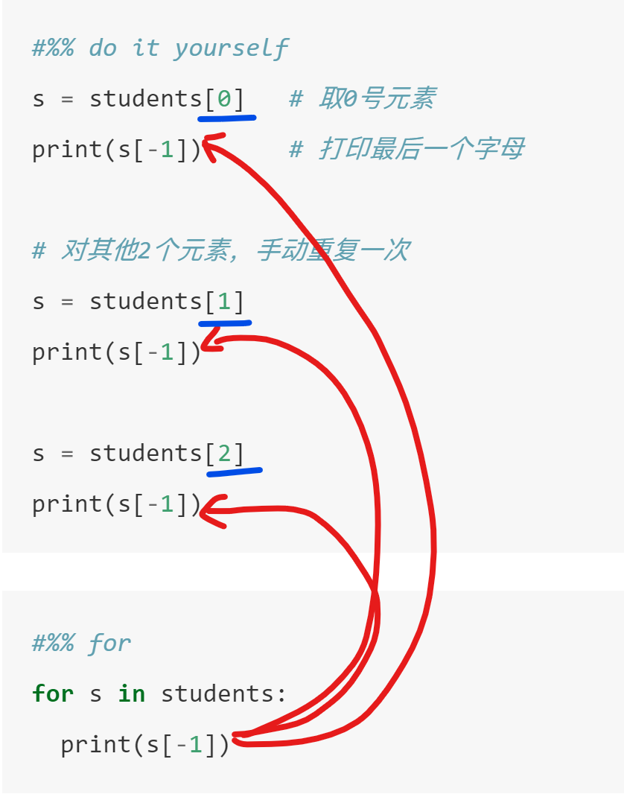

这本书添加了注释功能，左键选择任何文字，就会弹出注释菜单。注释功能区在页面的右上角。
注释有公共和私人两类。私人注释只有自己能看见，公共则所有人都能看见。
6 条件与循环（施工中）
6.1 条件if
6.1.1 多行if

ifelse, ifelse
price = 102
if price <100:
print ('buy')
elif price < 110:
print ('hold')
elif price < 120:
print ('think about it')
else:
print ('sell')## hold6.1.2 单行if
price = 70
if price<80: print('buy')## buy6.1.3 三元表达式
price = 85
'buy' if (price<80) else 'don\'t buy'## "don't buy"6.1.4 练习
小明身高1.75m，体重80.5kg。请根据BMI公式（体重除以身高的平方）帮小明计算他的BMI指数，并根据BMI指数：
- 低于18.5：过轻
- 18.5-25：正常
- 25-28：过重
- 28-32：肥胖
- 高于32：严重肥胖
用if-elif判断并打印结果：
小提示：
height = 1.75
weight = 80.5
# 计算BMI指数
# 用 if-elif 判断，并打印结果判断闰年：从year, 判断是否为闰年?
注：能被4整除但不能被100整除的 或者 能被400整除 那么就是闰年
year = 2005 # 或者任何一年6.1.5 嵌套if
例子：用if-else求a、b、c 3个数中最大的一个
思路：
- 比较a和b 1.1. 若a较大，则比较a和c 1.2. 若a较小，则比较b和c
a = 4
b = 9
c = 2
if a>b:
if a>c:
max_value=a
else:
max_value=c
else:
if b>c:
max_value=b
else:
max_value=c
print(f"最大值是{max_value}") ## 最大值是96.1.6 练习
对一个变量number，判断是否能被2或者3整除
按具体的情况，请输出：
- “你输入的数字可以整除 2 和 3”
- “你输入的数字可以整除 2，但不能整除 3”
- “你输入的数字可以整除 3，但不能整除 2”
- “你输入的数字不能整除 2 和 3”
思路： 1. 先看看2 2. 再看看3
6.1.7 再谈布尔值
前面讲过，布尔型有2种，真True和假False。
实际上，这2个符号，是布尔型变量的值，和1,2,3,4是整型的值，'apple'是字符串的值类似。但布尔型的值只有2种。
例如，有一个变量，用于表示“现在是否下雨”。这个问题只要2个答案，是或者否，显然这就可以用布尔型来表示：True就表示下雨，False就表示没下雨。我们就定义一个布尔型变量is_raining。
注意：为了达到顾名思义的效果，布尔型的变量，可以考虑用is_，has_等等开头，显示这是个“是否”问题的答案。
# 表示现在正在刮风下雨
is_raining = True
is_blowing = True判断是否同时在刮风和下雨
print(is_blowing and is_raining)## True布尔运算，其结果，也是一个布尔类型的变量：因此可以赋值给另一个变量。
bad_weather
bad_weather = is_blowing and is_blowing # 布尔运算的结果，也是一个布尔型，并且可以赋值给另一个变量
print(bad_weather)## True换一种理解，你可以把and运算，看成一个函数。类似于：
bool_and(x, y)就可以视为一个函数调用，返回的结果，就是与操作
bad_weather = bool_and(is_blowing, is_blowing) # 这是随便写的，无法执行回到我们的if语句。if语句接受的判断条件，本质上一个布尔型变量
if is_blowing and is_blowing:
print('don\'t go outside!')## don't go outside!if bad_weather:
print('don\'t go outside!')## don't go outside!所以，你在if后面跟一个布尔型变量bad_weather，或者一个条件is_blowing and is_blowing，是等价的。
回看前面的例子：
a = 2
b = 3
if a > b:
print('a > b')
else:
print('a <= b')## a <= b可以把a > b看成是“一个布尔型的变量”，这个变量，保存了a > b的结果，只是我们没有把这个结果赋值给一个变量名（没有绑定一个标签），而是直接放进了if语句中。
这等价于：
a = 2
b = 3
is_a_bigger = a > b
if is_a_bigger:
print('a > b')
else:
print('a <= b')## a <= b小结，布尔运算，实际上会返回一个新的布尔值，可以和任何变量一样进行操作，比如绑定名字，放进if里等等
6.2 while循环
while循环比较直观，“只要条件成立，就重复执行某块代码块”
或者说，“重复执行某块代码块，直到条件不成立为止”
while 判断条件(condition)：
执行语句(statements)6.2.1 举例：打印 1到10
思想：
- 要把10以内的所有自然数都过一次，肯定要用循环
- 设计一个变量，用来做计数器，比如i
- 每次循环中，计数器累加1，直到10为止，停止循环
- 每次循环中，打印这个数
- 注：让变量自增的运算符号是
+=
例如 i += 2即让i自增2，等价于 i = i + 2
i = 1
i += 999
print(i)## 1000设计一个从1到5的循环
i = 1
while i <= 5:
print(i)
i +=1
else:
print("循环结束")## 1
## 2
## 3
## 4
## 5
## 循环结束6.2.2 练习
- 打印 1到10 中的偶数。
小提示：如何判断一个数是否是偶数？取余的操作符是%
- 利用循环，求1到100的累加，计算完成最后打印出来
小提示：你可以建立一个新的变量，用来存放累加的结果
6.3 for循环
6.3.1 如果没有for循环
例如，有一个班级同学姓名的列表，我们要打印每一个同学姓名的最后一个字母。
students = ["Alex", "Bob", "Clare"]
print(students)## ['Alex', 'Bob', 'Clare']没有循环的时候，我们怎么做？
我们可能会尝试，把students这个列表，按索引号，逐一取出，然后再打印首字母
len(students)## 3知道students里有3个同学，我们就知道，索引号（index）是0，1，2。
现在我们用最笨的办法，逐一取出，逐一打印
s = students[0] # 取0号元素
print(s[-1]) # 打印最后一个字母
# 对其他2个元素，手动重复一次
s = students[1]
print(s[-1])
s = students[2]
print(s[-1])x
b
e显然，
- 如果元素很多，这就是个不可能完成的任务。
- 这个做法，重复的代码太多，必然可以得到精简
6.3.2 用while循环？
我们前面学了while循环，我们尝试用while来做完成
- 同样，一个计数器i，记录了索引号，从0，到
len(student) - 1= 2 - 每次循环，用
students[i]来取出对应的元素 - 打印最后一个元素
- i += 1，循环
i = 0
while i < len(students): # 注意，这里是 i < 3
s = students[i] # 即i = 0, 1, 2
print(s[-1])
i += 1## x
## b
## e6.3.3 用for循环
for s in students:
print(s[-1])## x
## b
## e6.3.4 比较
比较for循环，和手动操作
#%% do it yourself
s = students[0] # 取0号元素
print(s[-1]) # 打印最后一个字母
# 对其他2个元素，手动重复一次
s = students[1]
print(s[-1])
s = students[2]
print(s[-1])#%% for
for s in students:
print(s[-1])
上述for循环完成的事：
- 自动把s指向students中的0号元素，对s执行你的代码（打印最后一个字）
- 自动把s指向students中的1号元素，对s执行你的代码（打印最后一个字）
- 自动把s指向students中的3号元素，对s执行你的代码（打印最后一个字）
- …
6.3.5 for循环
for循环一般用于遍历一个可迭代对象（简单理解，就是如 List、Tuple和Dict这样具有序列结构的数据）
其作用是“对其中的每一个元素都做点什么”。
如果你要对一个List中的每一个元素都做点什么，此时就应该用for循环。
例如，我们要打印a = [1,2,3,4,5]中的每一个元素
或者说，我们要对a = [1,2,3,4,5]中的每一个元素，执行打印这个动作。
a_list = [1,2,3,4,5]
for i in a_list:
print(i)
## 1
## 2
## 3
## 4
## 5解释
- 目标：对
a = [1,2,3,4,5]中的每一个元素，执行打印这个动作。 a_list是一个列表的名字for i in a_list:：我们把中的每一个元素，按顺序，逐个过一遍。轮到哪个元素，我们就用i来指向它。print(i)：由上一句，i可以看作每一个元素代称，我们打印它。注意，前面由“1个缩进”。
break
a = [1,2,3,4,5]
for i in a:
if i < 4:
print (i)
else:
print('从这里断开！')
break
else:
print('循环完成！')## 1
## 2
## 3
## 从这里断开！6.3.6 range的循环
range(起点, 终点, 步长)：快速生成一个序列：惰性的（lazy）可迭代序列
range(0,10)：生成一个0 ~ 9的自然数序列（包括起点，不包括终点）range(0,10,2)：生成一个0 ~ 8的偶数序列（包括起点，不包括终点）- 可以转为List，如:
print(range(0,10))## range(0, 10)print(list(range(0,10))) ## [0, 1, 2, 3, 4, 5, 6, 7, 8, 9]但是，range不用转换为List，也可以使用！
如：按索引取值，或者切片(range切片会得到另一个range)等等
print(range(10,15)[2])## 12print(range(10,15)[2:4])## range(12, 14)也可以替代List，用在for循环中，常用于快速生成一个数字序列
for i in range (1,10,2):
print ('奇数是: ',i) ## 奇数是: 1
## 奇数是: 3
## 奇数是: 5
## 奇数是: 7
## 奇数是: 96.4 更多练习
求1~100之间能被7整除，但不能同时被5整除的所有整数。For和While版本
求列表（或者元组）平均值。For和While版本
score = [70, 90, 78, 85, 97, 94, 65, 80]进阶思考题：二分查找法
对于一个排序的List，找到某一个元素的位置
思路
- 找到列表的中间位置的元素
- 比较这个元素，和目标的大小。如果一样大，得到位置。
- 根据大小，把范围缩小到List前半段，或者后半段
- 在新的区间，回到1. 重复这个过程
a = [ 5,8,15,20,30,45,78,100,120,200 ]
target = 306.5 列表推导式List Comprehension
更详细的内容见后。
遍历List，并进行某个操作
do_something(i) for i in a_list
s = ['abc','abcd','bcde','bcdee','cdefg']
[x.upper() for x in s]## ['ABC', 'ABCD', 'BCDE', 'BCDEE', 'CDEFG']遍历List，找出符合条件的值，并对其进行某个操作
do_something(i) for i in a_list if condition(i)
old_list = ['abc','abcd','bcde','bcdee','cdefg']
matching = [ x.upper() for x in old_list if 'bcd' in x ]
print( matching )## ['ABCD', 'BCDE', 'BCDEE']6.6 循环Dict
d = {"x": 1, "y": 2}
for key in d:
print(key, d[key])## x 1
## y 2